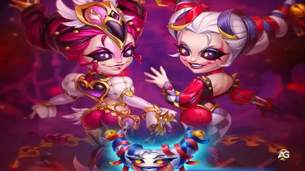

Guia da Peech: A Estrela Cintilante de Hero Wars Alliance
- Por: Alexandre Domingos. .
Conheça Peech: O Grande Espetáculo da Batalha
Olá, fãs de Hero Wars! Alexandre aqui, e hoje vamos mergulhar no mundo deslumbrante de Peech, a mais nova adição ao elenco de Hero Wars Alliance. Se você está procurando por uma heroína que pode transformar cada batalha em um grande espetáculo, Peech é a sua escolha. Ela é uma estrela que brilha mais intensamente quanto mais a luta se prolonga, e acredite, você vai querer ela no seu time.
À primeira vista, Peech pode parecer um pouco frágil, mas não se deixe enganar. Ela é uma Guerreira cuja principal estatística é Agilidade, tornando-a uma causadora de dano rápida e precisa. Como membro da facção Caminho do Caos, suas habilidades se tornam mais fortes à medida que a batalha avança. Vamos detalhar tudo o que você precisa saber sobre Peech, desde suas habilidades até suas sinergias com outros heróis.

Habilidades de Peech: Um Espetáculo em Todos os Sentidos
As habilidades de Peech são tão chamativas quanto eficazes. Aqui está um resumo do que ela traz para o campo de batalha:
Teatro da Dor
Recuo, Controle
Dano por golpe: (60% do Atq. Fís. + 4800)
Peech ataca o inimigo mais próximo 3 vezes. Cada golpe causa dano físico em área e empurra ligeiramente os inimigos afetados para trás. Isso é ótimo para controlar o campo de batalha e manter os inimigos à distância.
Efeito Passivo: Peech aumenta o alcance de seus ataques básicos e a área de efeito de seus ataques básicos e da primeira habilidade em 25% para cada aliado do Caos com quem ela inicia a batalha. Isso significa que quanto mais aliados do Caos você tiver, mais fortes e amplos serão os ataques dela!
Punição do Arlequim
Buff, Debuff
Dano: (50% do Atq. Fís. + 8400)
Redução de Armadura: 50%
Aumento de Ataque Físico ou Mágico: 50% da Armadura do alvo
Peech causa dano físico ao inimigo com maior Armadura. Em seguida, por 9 segundos, ela reduz a Armadura do alvo e aumenta o Ataque Físico ou Mágico de todos os aliados cuja Inteligência seja maior que a do alvo. O aumento depende da Armadura atual do inimigo.
Bônus: Os aliados recebem um aumento no atributo (Ataque Físico ou Mágico) que era maior no início da batalha. Isso faz com que sua equipe cause ainda mais dano!
O Último Ato
Debuff
Roubo de Ataque Físico: (15% do Atq. Fís. + 1800) a cada 0,5 segundos
Peech se vincula ao inimigo com o maior Ataque Físico por 6 segundos. Durante esse tempo, o alvo não pode se mover, e Peech rouba uma parte do Ataque Físico dele a cada 0,5 segundos. Como o efeito dura 6 segundos e ela rouba a cada 0,5 segundos, Peech roubará um total de 12 vezes durante esse período!
Ela mantém o Ataque Físico roubado por 6 segundos após o fim do efeito ou se for interrompido.
Nota: Essa habilidade não impede o inimigo de lutar, mas é interrompida se Peech for atingida por um efeito de controle (como atordoamento ou congelamento).
Presença de Palco
Habilidade Passiva
Bônus de dano por aliado: (15% do Atq. Fís. + 1200)
Bônus de dano por aliado do Caos: 11636 (15% do Atq. Fís. + 2400)
Essa é uma habilidade passiva, ou seja, está sempre ativa. Cada aliado posicionado à frente de Peech no momento do seu ataque aumenta todo o dano que ela causa. Se o aliado pertencer à facção do Caos, o bônus é ainda maior!
Importante: Apenas os aliados com quem Peech inicia a batalha são contados para esse bônus. Heróis como as Tartarugas Ninja, que entram na luta após o início da batalha, não são considerados. Então, escolha sua equipe com sabedoria!
Artefatos: Priorizando o Poder de Peech
Para aproveitar ao máximo Peech, você deve focar em melhorar seus artefatos na seguinte ordem:
1. Heartbreaker (Armadura)
Esta deve ser sua primeira prioridade. Aumentar a Armadura de Peech a tornará mais durável, permitindo que ela permaneça na batalha por mais tempo e continue aumentando sua força.
2. Alchemist's Folio (Penetração de Armadura + Ataque Físico)
Em seguida, vem o Alchemist's Folio. Aumentar a Penetração de Armadura e o Ataque Físico de Peech tornará seus golpes ainda mais devastadores, especialmente quando combinados com sua habilidade Punição do Arlequim.
3. Anel da Agilidade (Agilidade)
Por fim, o Anel da Agilidade aumentará a Agilidade de Peech, melhorando seu Ataque Físico e Armadura. Esta é uma ótima maneira de aprimorar seus atributos e torná-la uma verdadeira força a ser reconhecida.

Prioridade dos Glifos de Peech
| Prioridade | Glifos |
|---|---|
| 1º | Ataque Físico |
| 2º | Perfuração de Armadura |
| 3º | Agilidade |
| 4º | Vida |
| 5º | Esquiva |
Prioridade das Skins de Peech - Hero Wars Alliance
| Prioridade | Tipo de Skin | Nome da Skin | Bônus Principal |
|---|---|---|---|
| 1ª | Ataque Físico | Skin Estelar | +7.095 de Ataque Físico |
| 2ª | Esmagamento | Skin Mítica+ | +11.840 de Esmagamento |
| 3ª | Agilidade | Skin Padrão | +1.365 de Agilidade |
| 4ª | Vida | Skin Romântica | +106.645 de Vida |
Explicações das Prioridades das Skins de Peech
1ª - Skin Estelar (Ataque Físico): O Ataque Físico é a principal prioridade de Peech, pois aumenta o dano de todas as suas habilidades ofensivas. Sua habilidade passiva Violeta também concede Dano Físico bônus a todos os aliados a frente, e esse bônus é ainda mais forte para heróis da facção Caos — melhorando muito sua sinergia com Kayla. Essa skin maximiza tanto o dano pessoal de Peech quanto o potencial ofensivo geral de sua equipe.
2ª - Skin Mítica+ (Esmagamento): O atributo Esmagamento aumenta todo o dano causado a inimigos com pouca vida. Esse bônus melhora diretamente as habilidades de dano em área e contínuo de Peech, como O Ato Final, permitindo que ela finalize inimigos enfraquecidos mais rapidamente. Também complementa o estilo de jogo agressivo de Kayla e ajuda a garantir eliminações rápidas em equipes da facção Caos.
3ª - Skin Padrão (Agilidade): A Agilidade fornece Ataque Físico adicional e um pequeno aumento de Armadura. Embora útil para aumentar o dano total e a sobrevivência de Peech, seu impacto é menor em comparação com os bônus ofensivos diretos de Ataque Físico e Esmagamento.
4ª - Skin Romântica (Vida): O bônus de Vida aumenta a durabilidade de Peech, mas como ela normalmente permanece a uma distância segura e depende de controle de grupo e debuffs, essa skin deve ser aprimorada por último.
Guia do Talismã da Atriz da Peech
O Talismã da Atriz para Peech é um item essencial para maximizar seu potencial como uma guerreira dominante em Hero Wars Alliance. Este talismã foca no aumento do ataque físico de Peech, permitindo que ela cause danos massivos e mantenha uma forte presença no campo de batalha.
Atributos Principais:
- +2.000 Agilidade
- +3.800 Ataque Físico
Além disso, os slots do talismã oferecem bônus extras que aprimoram ainda mais seu poder ofensivo:
Bônus de Slots:
- Slot 1: +3.000 Ataque Físico
- Slot 2: +2.000 Ataque Físico
- Slot 3: +2.000 Ataque Físico
Graças a esses atributos, o Talismã da Atriz torna Peech uma das guerreiras mais letais de sua classe. Seu alto ataque físico, combinado com habilidades de dano em área e controle, faz dela um recurso essencial em equipes que priorizam ofensivas rápidas e devastadoras. Se você deseja maximizar o desempenho de Peech, este talismã é uma escolha indispensável!

Peech — Talismã do Acrobata
Este talismã aumenta a chance de dano crítico e melhora a sobrevivência de Peech, tornando-a mais letal nas batalhas.

Bônus de Espaços do Talismã do Acrobata:
Espaço Principal: Vida +110.000; Chance de Crítico +2.200 ×3
| Slot | Bônus |
|---|---|
| Slot Principal | Vida +100.000 |
| Slot de Re-rolo 1 | Chance Crítica +2.200 |
| Slot de Re-rolo 2 | Chance Crítica +2.200 |
| Slot de Re-rolo 3 | Chance Crítica +2.200 |
Sinergias: Peech e a Turma do Caos
Peech funciona melhor com outros heróis do Caos, e suas habilidades têm uma sinergia particularmente boa com Krista, Lars, Xe'sha, Kayla, Aidan, Astaroth e Cleaver. Vamos dar uma olhada mais de perto em como esses heróis podem complementar as habilidades de Peech:
Krista
As habilidades Vingança Gelada e Correntes de Gelo de Krista são perfeitas para preparar os ataques de Peech. Correntes de Gelo reduz a Defesa Mágica do inimigo, tornando-o mais vulnerável aos ataques físicos de Peech. Além disso, a Marca d'Água aplicada pelas habilidades de Krista pode ser explorada por outros heróis como Lars.
Lars
As habilidades Senhor da Tempestade e Raio de Lars são ótimas para controle de multidão. Sua capacidade de arrastar inimigos para o centro do campo de batalha e atordoá-los cria a oportunidade perfeita para Peech desferir seu Teatro da Dor e Punição do Arlequim.
Xe'sha
As habilidades Raio Mortal e Poder Alado de Xe'sha a tornam uma poderosa aliada para Peech. Raio Mortal drena a saúde dos aliados para causar dano massivo aos inimigos, enquanto Poder Alado dá a Xe'sha um bônus permanente de Ataque Mágico com base na saúde perdida pelos aliados. Isso pode criar um combo mortal quando combinado com as habilidades de aumento de dano de Peech.
Kayla e Aidan
As habilidades Fúria da Fênix de Kayla e Ritual da Fênix de Aidan são uma combinação perfeita para Peech. A capacidade de Kayla de causar dano e aumentar sua saúde combina bem com a Presença de Palco de Peech, enquanto as habilidades de sacrifício de Aidan podem aumentar a sobrevivência geral da equipe.
Astaroth e Cleaver
O Véu de Chamas de Astaroth fornece um escudo que bloqueia dano físico, dando a Peech mais tempo para aumentar sua força. As habilidades Gancho Enferrujado e Putrefação de Cleaver são ótimas para controlar o campo de batalha e causar dano aos inimigos, tornando-o um valioso aliado para Peech.
Melhores Equipes para Peech 2025
Melhores Equipes de Defesa para Peech
- Kayla, Dante, Peech, Aidan, Octavia
- Astaroth, Tempus, Xe'sha, Peech, Aidan
- Astaroth, Kayla, Xe'sha, Peech, Aidan
- Julius, Kayla, Tempus, Peech, Aidan
- Julius, Tristan, Kayla, Peech, Aidan
- Krista, Soleil, Lars, Polaris, Peech
- Astaroth, Krista, Soleil, Lars, Peech
Melhores Equipes de Ataque para Peech
- Octavia, Aidan, Peech, Dante, Kayla
- Aidan, Peech, Xe'sha, Tempus, Astaroth
- Aidan, Peech, Xe'sha, Kayla, Astaroth
- Aidan, Peech, Tempus, Kayla, Julius
- Aidan, Peech, Kayla, Tristan, Julius
- Peech, Polaris, Lars, Soleil, Krista
- Peech, Lars, Soleil, Krista, Astaroth
Considerações Finais: Peech é Indispensável
Peech é uma heroína que realmente brilha no calor da batalha. Suas habilidades são projetadas para torná-la mais forte à medida que a luta avança, e suas sinergias com outros heróis do Caos a tornam uma adição versátil e poderosa para qualquer equipe. Seja para dominar na Arena ou enfrentar os desafios mais difíceis do PvE, Peech é uma heroína que você vai querer ter em sua formação.
Então, o que você está esperando? Comece a montar sua equipe do Caos em torno de Peech hoje e prepare-se para transformar cada batalha em um grande espetáculo de sua própria criação. Até a próxima, este é o Alexandre se despedindo boa jogatina!
Sugestões de Vídeo:
Você pode ter interesse:


Deixe Sua Opinião!
Você gostou do nosso Guia da Peech para Hero Wars Mobile? Há algo que não entendeu ou gostaria de sugerir mudanças? Convidamos você a se juntar à nossa sessão de comentários na página do Alexandre Games Blog. Não hesite em expressar sua opinião, clarificar suas dúvidas e compartilhar sua sugestões.
Clique no botão abaixo para começar: